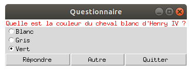

Boutons Radio
Le programme ci-dessous illustre l’utilisation des boutons radio pour créer un questionnaire type QCM. Un bouton radio est un bouton rond que l'on peut cocher pour indiquer un choix. Observez le résultat attendu :

import tkinter as tk
def reponse():
texte_qst.set('Votre réponse est -> ' + texte_rep.get())
def autre_question():
texte_choixA.set("Quatre pattes")
texte_choixB.set("Huit pattes")
texte_choixC.set("Six pattes")
texte_qst.set("Combien avait-il de pattes ?")
texte_rep.set("")
mon_app = tk.Tk()
mon_app.title('Questionnaire')
texte_qst = tk.StringVar() # texte variable acceuillant la question
texte_qst.set("Quelle est la couleur du cheval blanc d'Henry IV ?")
texte_rep = tk.StringVar() # texte variable accueillant la réponse
# Création d'un widget Label
tk.Label(mon_app, textvariable=texte_qst, fg='red', bg='white').grid(row=0, column=0, columnspan=3)
# Création des textes pour les réponses
texte_choixA = tk.StringVar()
texte_choixB = tk.StringVar()
texte_choixC = tk.StringVar()
texte_choixA.set("Blanc")
texte_choixB.set("Gris")
texte_choixC.set("Vert")
# Création des boutons radio
tk.Radiobutton(mon_app, textvariable=texte_choixA, value="A", variable=texte_rep).grid(row=1, column=0, sticky='w')
tk.Radiobutton(mon_app, textvariable=texte_choixB, value="B", variable=texte_rep).grid(row=2, column=0, sticky='w')
tk.Radiobutton(mon_app, textvariable=texte_choixC, value="C", variable=texte_rep).grid(row=3, column=0, sticky='w')
# Création des boutons
tk.Button(mon_app, text='Répondre', command=reponse).grid(row=4, column=0, sticky='ew')
tk.Button(mon_app, text='Autre', command=autre_question).grid(row=4, column=1, sticky='ew')
tk.Button(mon_app, text='Quitter', command=mon_app.destroy).grid(row=4, column=2, sticky='ew')
mon_app.mainloop()
Explications
Attardons nous sur la nouveauté de cet exemple : les radio-bouttons. On les déclare par une ligne de ce type :
tk.Radiobutton(mon_app, textvariable=texte_choixA, value="A", variable=texte_rep).grid(row=1, column=0, sticky='w')
- Les textes variables
texte_choixAetc... servent à faire varier les intitulés des réponses en fonction des questions. - la réponse se fait au moyen d'un texte variable :
texte_rep - Pour griser les boutons et ne pas proposer de réponse par défaut, on positionne la réponse à ""
On remarque que pour éviter la création de variables inutiles et alléger un peu le code, on peut appeler la
méthode .grid() immédiatement après la création du widget.
Le reste est à présent classique. Les commentaires disséminés dans le programme doivent vous permettre de comprendre cet exemple.